VRMicroscopeMaking science explorable.
把仪器操作、成像概念和 AI 引导连接起来，让显微镜从一台复杂设备，变成可以操作和探索的虚拟实验。

01把仪器操作、成像原理和解释连起来
VRMicroscope 是一个基于 Unity／C# 的显微镜教学仿真项目。学习者进入虚拟实验室，选择样本、调节观察条件、探索光学组件，再通过可视化和 AI 引导理解操作背后的原理。项目的重点是建立“操作—观察—解释”的连续路径，而不是把实验讲义搬到头显里的面板上。

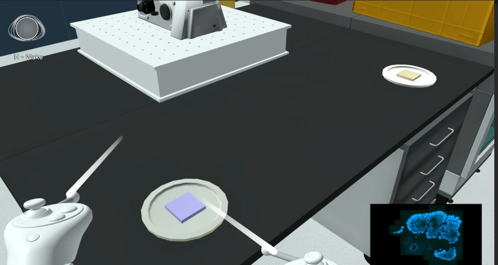
我的工作
参与仪器与教学交互、成像可视化、实验状态组织，以及 Python AI 后端与语音／高亮流程集成。
协作与基础
场景模型、教学内容和其他协作成果按项目实际来源使用；这里展示个人参与模块及其在整体体验中的连接。
02从调焦和数值孔径开始理解成像
教学首先从可直接观察的变化开始。调焦让用户看到同一样本在不同条件下的成像反馈；数值孔径演示则用光锥和示意面板，把设备参数与收集光线的范围联系起来。让参数变化和画面变化同时出现，能够减少只记住术语却不知道它影响什么的问题。

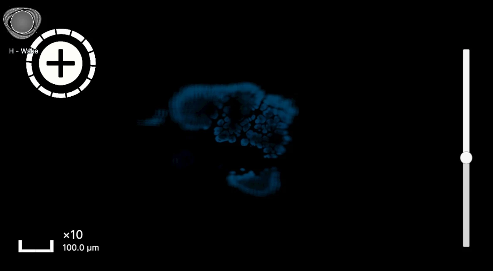

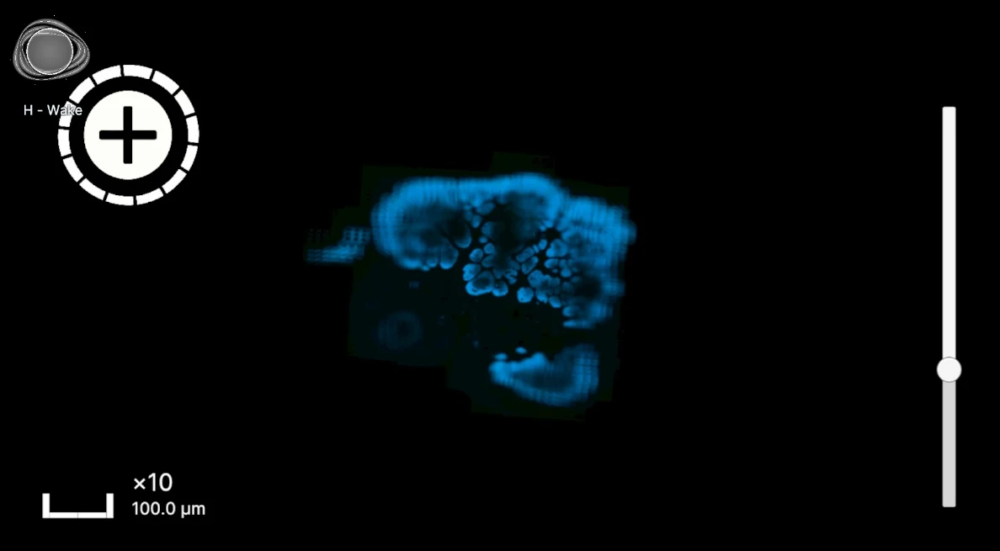

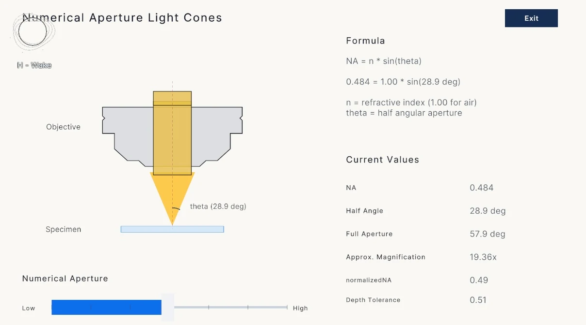
数值孔径的基本定义：n 为介质折射率，θ 为收集光锥的半角。该关系用于理解教学示意。
03SIM：把频率混合变成可观察的过程
空间频率模块将样本纹理读回 CPU，构造二维信号并加 Hann 窗，通过可分离的 radix-2 FFT 得到复频谱。显示端采用幅度、对数压缩和归一化，让强弱差异很大的频率成分能同时被观察。输入、混合频谱和支撑范围分开显示，避免用户把三个概念混为同一张“增强图”。
Î(k) = Ŝ(k) + (m/2)[eⁱᵠŜ(k − k₀) + e⁻ⁱᵠŜ(k + k₀)]
结构光与样本相乘，在频域中产生平移分量。这是教学演示背后的频率混合关系；显示的频谱还受窗口与成像支撑限制。

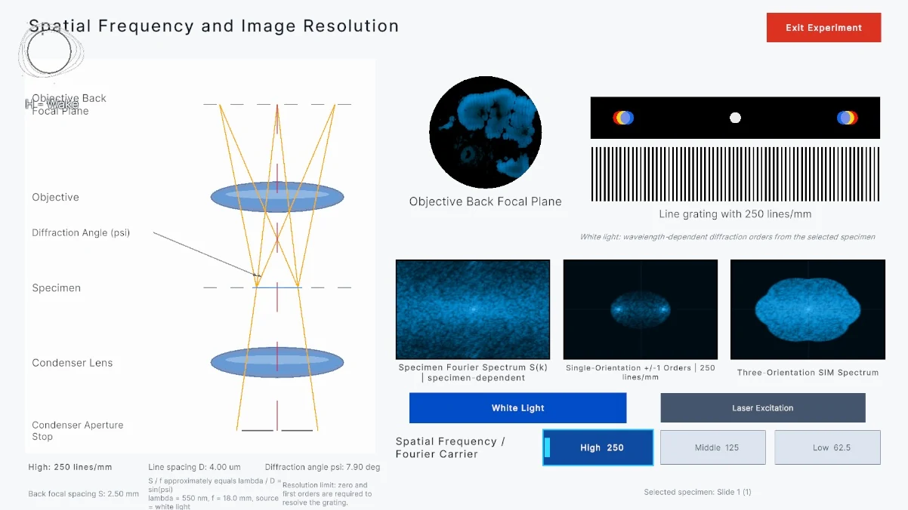

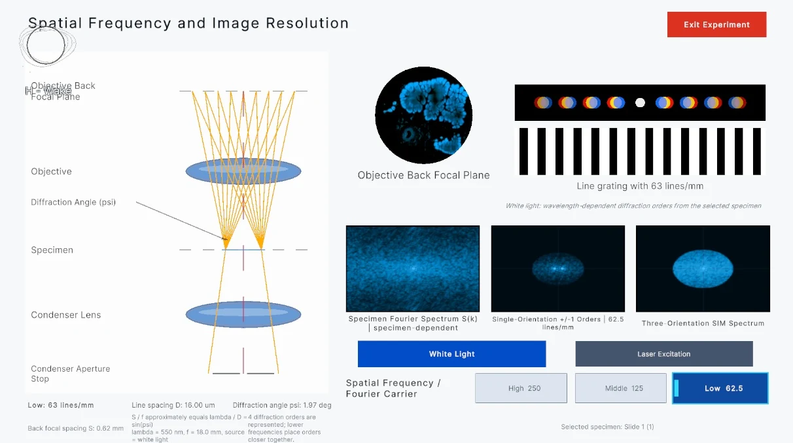
实现使用复频谱平移和双线性采样构造混合成分，结合物镜截止频率与载频展示可覆盖区域。用户改变载频或方向数时，可以追踪频率分量如何移动，而不是只看到一个预先制作的动画。
04让 AI 获得当前场景，而不只回答通用问题

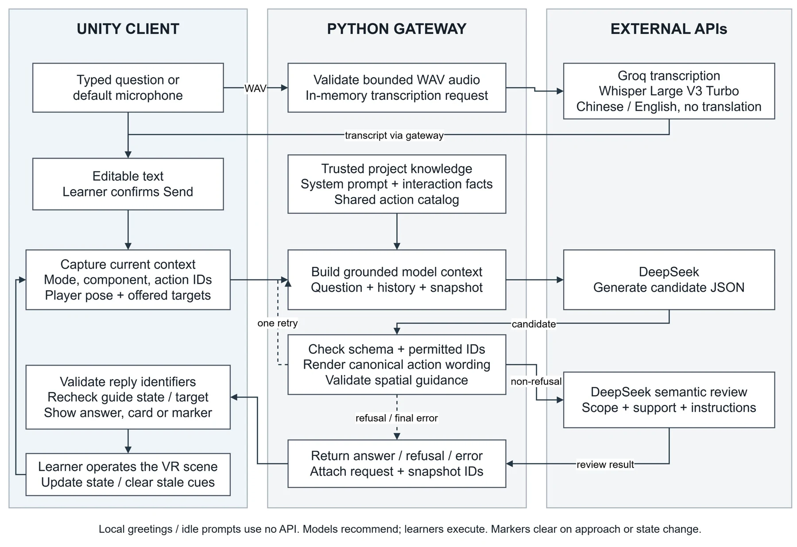
Unity 把当前实验阶段、样本／组件信息和可用交互提供给 Python HTTP 后端。DeepSeek 用于自然语言解释，Groq 托管的 Whisper 接口完成语音转写。回复中的结构化信息经过解析与校验，再交给前端显示或定位流程，避免把任意自然语言直接当成场景命令。

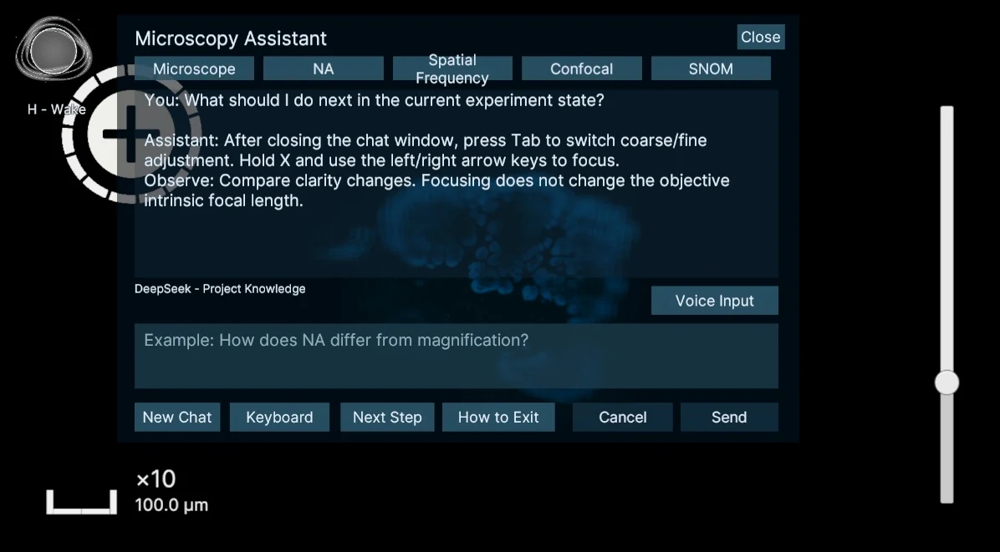

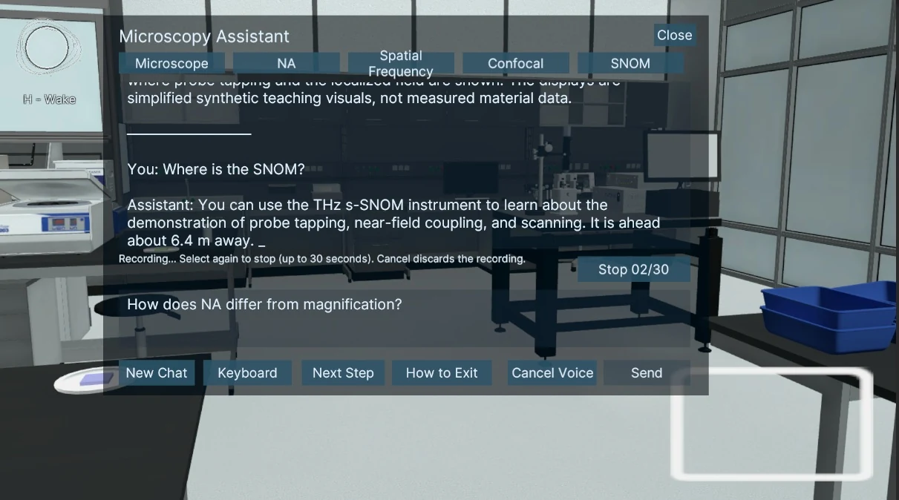
场景中的“这个部件在哪里”不能只用百科式解释解决。定位流程利用对象标识与位置，给出相对方向和距离，并通过视觉高亮把语言描述落到空间对象上。

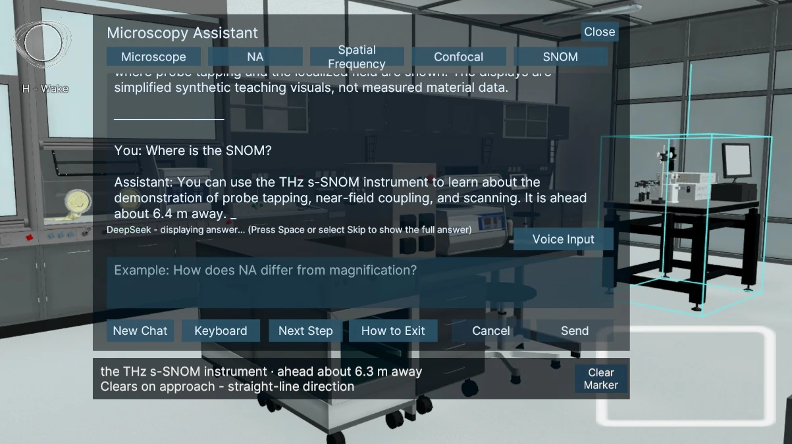
05从组件探索扩展到 SNOM 教学流程
组件探索将拆解视图、部件名称和解释连接起来，帮助用户把外部操作与设备结构对应。SNOM 演示则进一步把探针选择、安装检查、扫描过程和结果解释组织为可跟随的实验阶段；交互状态同时为 AI 引导提供上下文。

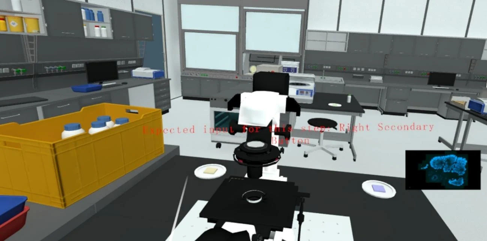

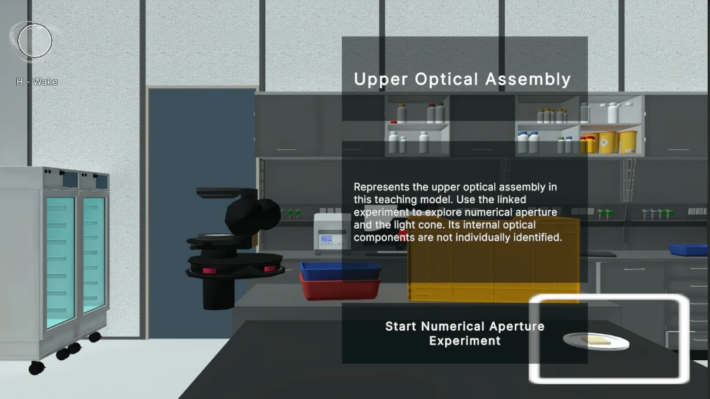

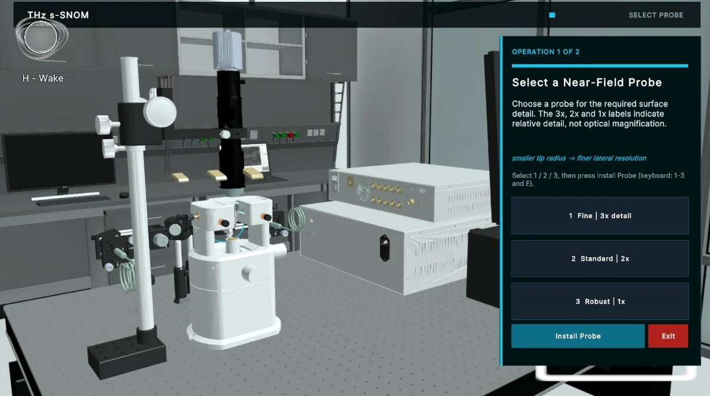

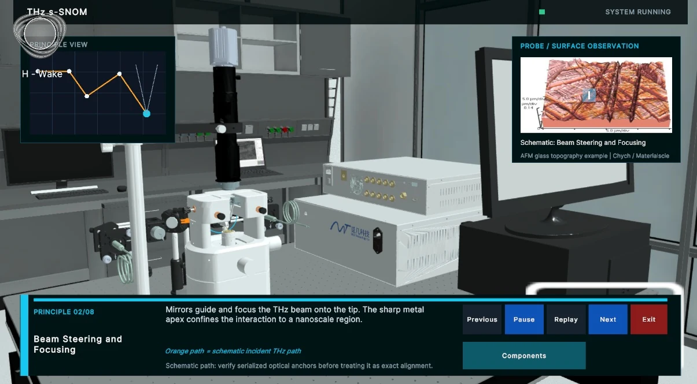
06工程上的连接，比孤立功能更重要
这一项目的主要挑战是维持多个视角的一致性：用户操作改变实验状态，教学面板解释状态，AI 引导又需要理解这些状态。频谱展示、对象高亮和语音输入的价值，都取决于它们能否接回当前实验。
先让用户看见变化，再帮助他解释变化。
项目主体于 2026 年 8 月完成，随后补充完善至 10 月。现阶段的成果是教学仿真与交互实现；后续可通过任务完成情况和使用观察，继续检查哪些解释真正帮助学习，而不是仅增加面板数量。